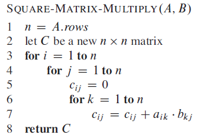
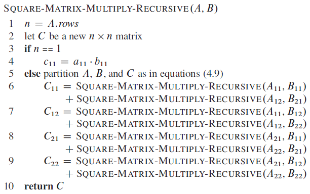
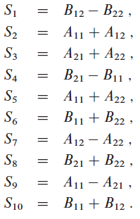
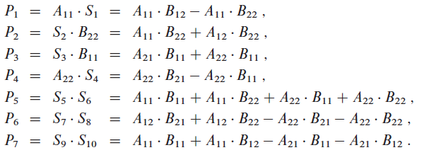
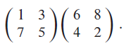
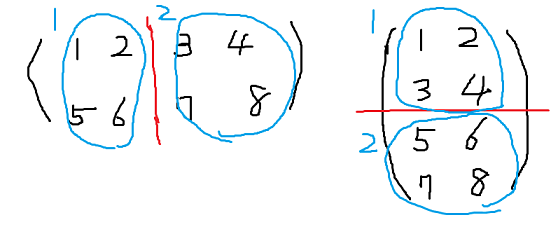

행렬 A,B를 곱한 결과인 행렬 C의 원소를 구하는 공식

SQUARE-MATRIX-MULTIPLY 의사코드의 실행시간 : n번 수행하는 for문이 3개 있으므로 Θ(n³) 이다.
A simple divide-and-conquer algorithm
※ 정확한 계산을 위해 n은 2의 제곱이라고 가정한다.

5번 줄에서 A,B,C 행렬에 원소를 복사하는 것은 Θ(n²) 이 걸린다. 그러나 index caculation을 사용하면 Θ(1) 밖에 걸리지 않는다.
// index caculation의 정확한 개념은 책에 나와 있지 않다.
T(n) = Θ(n³). 나중에 Section 4.5 - master mathod로 증명할 것이다.
점근적 표기는 상수곱 요소를 포함하지만 재귀적 표기는 포함하지 않는다.
Strassen's method
Strassen's method는 n/2 x n/2 행렬들의 8번 재귀곱 수행을 대체해 7번만 수행한다.
Strassen's method 4단계
- 입력 행렬 A,B와 출력 행렬 C를 식 4.9처럼 n/2 X n/2 부분 행렬로 나눠라. SQUARE-MATRIX-MULTIPLY-RECURSIVE에서와 같이 index calculation을 사용하면 이 단계는 Θ(1)이 걸린다.
- 1단계에서 만든 두 행렬의 합 또는 차 이면서 n/2 x n/2 행렬 S
1, S2, ... , S10을 만들어라. - 1단계에서 만든 부분 행렬과 2단계에서 만든 10개 행렬을 사용해 7개의 행렬곱 P
1, P2, ... , P7을 재귀적으로 계산한다. 행렬은 n/2 x n/2 이다. - P
i행렬의 다양한 조합을 더하고 뺌으로써 C 행렬의 결과인 C11, C12, C21, C22부분 행렬을 계산한다.
T(n) = Θ(n
lg7).S 공식

P 공식

C 공식
Exercises
4.2-1
Use Strassen’s algorithm to compute the matrix product

Show your work.
C
11 = P5 + P4 - P2 + P6 = 48 - 10 -8 - 12 = 18C
12 = P1 + P2 = 6 + 8 = 14C
21 = P3 + P4 = 72 - 10 = 62C
22 = P5 + P4 - P2 - P6 = 48 + 6 - 72 + 84 = 664.2-2
Write pseudocode for Strassen’s algorithm.
STRASSEN(A,B)
n = A.rows
let C be a new n x n matrix
if n== 1
C11 = a11·b11
else
partition A,B,P as in equation (4.9)
S1 = B11 - B12
S2 = A11 + A12
S3 = A21 + A22
S4 = B21 - B11
S5 = A11 + A22
S6 = B11 + B22
S7 = A12 - A22
S8 = B21 + B22
S9 = A11 - A21
S10 = B11 + B12
P1 = STRASSEN(A11, S1)
P2 = STRASSEN(S2, B22)
P3 = STRASSEN(S3, B11)
P4 = STRASSEN(A22, S4)
P5 = STRASSEN(S5, S6)
P6 = STRASSEN(S7, S8)
P7 = STRASSEN(S9, S10)
C11 = P5 + P4 - P2 + P6
C12 = P1 + P2
C21 = P3 + P4
C22 = P5 + P1 - P3 - P7
return C
4.2-3
How would you modify Strassen’s algorithm to multiply n x n matrices in which n is not an exact power of 2? Show that the resulting algorithm runs in time Θ(nlg7).정확히 이해가 되지 않는다.
4.2-4
What is the largest k such that if you can multiply 3 x 3 matrices using k multiplications (not assuming commutativity of multiplication), then you can multiply n x n matrices in time o(nlg7)? What would the running time of this algorithm be?재귀식
master method
4.2-5
V. Pan has discovered a way of multiplying 68 x 68 matrices using 132,464 multiplications, a way of multiplying 70 x 70 matrices using 143,640 multiplications, and a way of multiplying 72 x 72 matrices using 155,424 multiplications. Which method yields the best asymptotic running time when used in a divide-and-conquer matrix-multiplication algorithm? How does it compare to Strassen’s algorithm?
따라서, 70x70 행렬이 제일 빠르다.
스트라센과 비교시, 스트라센은 lg7 ≈ 2.80 이므로 스트라센이 더 느리다.
4.2-6
How quickly can you multiply a kn x n matrix by an n x kn matrix, using Strassen’s algorithm as a subroutine? Answer the same question with the order of the input matrices reversed.
(kn x n)(n x kn) = (kn x kn), k²번 곱이 추가된다.
(n x kn)(kn x n) = (n x n), k곱이 추가된다.
구간을 나눠서 n x n 행렬로 곱한 뒤 서로 더하는 방식을 사용한다. 기존 행렬 곱을 사용한 것과 같은 결과가 나온다.

1로 표시된 행렬끼리 곱하고, 2로 표시된 행렬끼리 곱한다. 그리고 더하면 끝.
4.2-7
Show how to multiply the complex numbers a + bi and c + di using only three multiplications of real numbers. The algorithm should take a, b, c, and d as input and produce the real component ac - bd and the imaginary component ad + bc separately.
Show how to multiply the complex numbers a + bi and c + di using only three multiplications of real numbers. The algorithm should take a, b, c, and d as input and produce the real component ac - bd and the imaginary component ad + bc separately.
//3개의 곱만 사용한다는 개념을 이해한다면 쉬운 문제이다. (처음에 개념이 이해가 안 된 1人...)
A = (a+b)(c+d)
B = ac
C = bd
따라서, (B-C) + (A-B-C)i